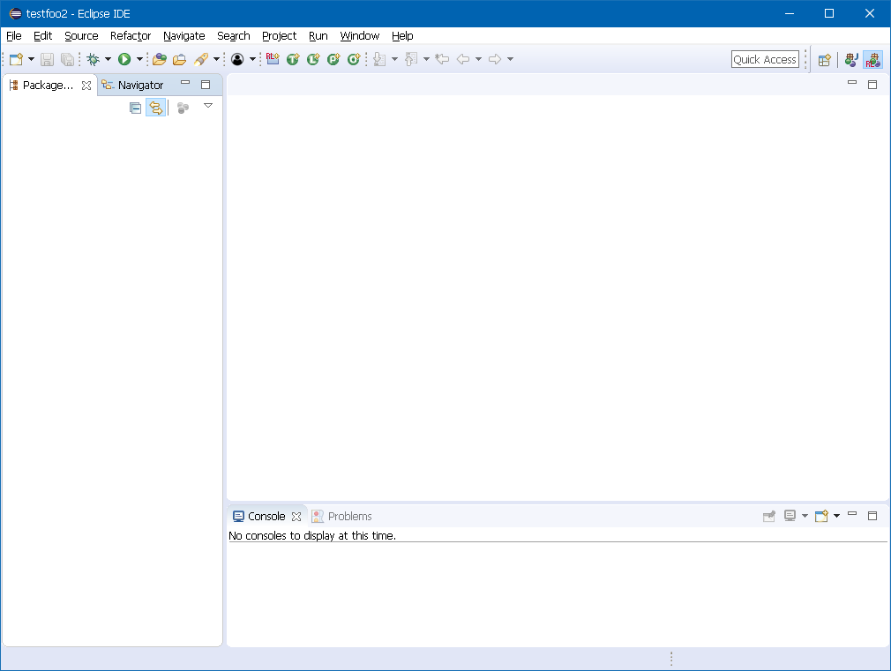

Repast Quick Start Guide
This guide is intended to provide a minimal set of instructions to
download, install, and run Repast Simphony and provide the user with a path
towards developing their own models. The
Repast FAQ,
Repast Downloads, and
Repast Documentation pages all
provide more detailed documentation.
To get started using Repast Simphony, please follow these steps:
Step 1: Download and install Repast Simphony
- Download and install the latest version of Repast Simphony from the downloads page.
Step 2: Run Repast and import example models
- After Repast is installed, run the "Repast Simphony" shortcut for Windows or
macOS, or simply run Eclipse for Linux. A blank workspace is set to the ReLogo
perspective as shown below. Eclipse perspectives provide customized layouts
of the Eclipse window components depending on the type of activity the user
is doing. The ReLogo perspective provides a minimal view of development components.

- From the window menu, select File -> Import Repast Repast Examples.
The model import dialog will appear with the list of available Repast models
if the Windows or macOS installer was used. Linux users should download the
demo models separately (found here) and browse to the saved location.
Select the "Zombies_Demo" at the bottom of the list of available models and click the Finish button. This will import the Zombies demo that is described in the ReLogo Getting Started tutorial.
- Run the ReLogo zombies demo model. Click the black Run selection
icon next to the Run button and select "Zombies_Demo Model" as shown in the
following figure. The Repast runtime window will appear.
- Click the Initialize Run button to initialize the model. A number of
slider buttons will appear in the User Panel from which model parameters can be
adjusted. Click the model Play button and the display will initialize and run
until the pre-determined stop time (when no humans are left), at which point the model run will finish.
Step 3: Select a Repast tutorial depending on your modeling needs and programming level
Guide User Experience Level or Application ReLogo Getting Started If you are new to Repast or if your programming background is limited. ReLogo is a computer language designed to help you quickly create simpler agent-based models. Repast Java Getting Started After you are acquainted with Repast or if you know the Java computer language and you want to develop more complex Repast Simphony models. Repast Statecharts After you are acquainted with Repast and you would like to start developing more complex agent-behavior logic using a visual programming editor instead of writing code. Repast Batch Runs Getting Started After you are acquainted with Repast and you would like to start running multiple individual model runs at the same time for parameter sweep and exploration. EMEWS After you are acquainted with Repast and you would like to use the Extreme-scale Model Exploration with Swift (EMEWS) framework for large-scale experiments with agent-based models. Repast Simphony Reference A comprehensive reference manual and code cookbook for Repast Simphony.
{kind=link}
{kind=link}
{kind=link}
{kind=link}